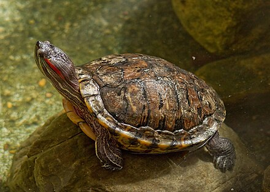

Red-eared Slider or red-eared terrapin (Trachemys scripta elegans) is a subspecies of the pond slider (Trachemys scripta), a semiaquatic turtle belonging to the family Emydidae. It is the most popular pet turtle in the United States, is also popular as a pet across the rest of the world, and is the most invasive turtle. It is the most commonly traded turtle in the world.
The red-eared slider is native from the Midwestern United States to northern Mexico, but has become established in other places because of pet releases, and has become invasive in many areas where it outcompetes native species. The red-eared slider is included in the list of the world's 100 most invasive species.

Etymology
The red-eared slider gets its name from the small, red stripe around its ears, or where its ears would be, and from its ability to slide quickly off rocks and logs into the water. This species was previously known as Troost's turtle in honor of an American herpetologist Gerard Troost. Trachemys scripta troostii is now the scientific name for another subspecies, the Cumberland slider.
Taxonomy
The red-eared slider belongs to the order Testudines, which contains about 250 turtle species. It is a subspecies of Trachemys scripta. It was previously classified under the name Chrysemys scripta elegans. Trachemys scripta contains three subspecies: T. s. elegans (red-eared slider), T. s. scripta (yellow-bellied slider), and T. s. troostii (Cumberland slider).
- Prefer shallow, warm waters.
- Often found in ponds, lakes, and marshes.
- Need places to bask and plenty of vegetation.
Description
The carapace of this species can reach more than 40 cm (16 in) in length, but the typical length ranges from 15 to 20 cm (6 to 8 in). The females of the species are usually larger than the males. They typically live between 20-30 years, although some individuals can live for more than 70 years. Their life expectancy is shorter when they are kept in captivity. The quality of their living environment has a strong influence on their lifespans and well being.
The shell is divided into the upper or dorsal carapace, and the lower, ventral carapace or plastron. The upper carapace consists of the vertebral scutes, which form the central, elevated portion; pleural scutes that are located around the vertebral scutes; and then the marginal scutes around the edge of the carapace. The rear marginal scutes are notched. The scutes are bony keratinous elements. The carapace is oval and flattened (especially in the male) and has a weak keel that is more pronounced in the young. The color of the carapace changes depending on the age of the turtle. It usually has a dark green background with light and dark, highly variable markings. In young or recently hatched turtles, it is leaf green and gets slightly darker as a turtle gets older, until it is a very dark green, and then turns a shade between brown and olive green. The plastron is always a light yellow with dark, paired, irregular markings in the centre of most scutes. The plastron is highly variable in pattern. The head, legs, and tail are green with fine, irregular, yellow lines. The whole shell is covered in these stripes and markings that aid in camouflaging an individual.
Physical Characteristics and Thermoregulation
These turtles also have a complete skeletal system, with partially webbed feet that help them to swim and that can be withdrawn inside the carapace along with the head and tail. The red stripe on each side of the head distinguishes the red-eared slider from all other North American species and gives this species its name, as the stripe is located behind the eyes, where their (external) ears would be. These stripes may lose their color over time. Color and vibrance of ear stripe can indicate immune health, with bright red having higher immune response than yellow stripes. Some individuals can also have a small mark of the same color on the top of their heads. The red-eared slider does not have a visible outer ear or an external auditory canal; instead, it relies on a middle ear entirely covered by a cartilaginous tympanic disc.
Like other turtles, the species is poikilotherm and thus dependent on the temperature of its environment. For this reason, it needs to sunbathe frequently to warm up and maintain body temperature.
Sexual Dimorphism
Some dimorphism exists between males and females. Red-eared slider young look practically identical regardless of their sex, making distinguishing them difficult. One useful method, however, is to inspect the markings under their carapace, which fade as the turtles age. Distinguishing the sex of adults is much easier, as the shells of mature males are smaller than those of females. Male red-eared sliders reach sexual maturity when their carapaces' diameters measure 10 cm (3.9 in) and females reach maturity when their carapaces measure about 15 cm (5.9 in). Both males and females reach sexual maturity at 5-6 years old. Males are normally smaller than females, although this parameter is sometimes difficult to apply, as individuals being compared could be of different ages.
Males have longer claws on their front feet than the females; this helps them to hold onto a female during mating, and is used during courtship displays. The males' tails are thicker and longer. Typically, the cloacal opening of a female is at or under the rear edge of the carapace, while the male's opening occurs beyond the edge of the carapace. The male's plastron is slightly concave, while that of the female is completely flat. The male's concave plastron also helps to stabilize the male on the female's carapace during mating. Older males can sometimes have a dark greyish-olive green melanistic coloration, with very subdued markings. The red stripe on the sides of the head may be difficult to see or be absent. The female's appearance is substantially the same throughout her life.
Distribution and habitat
The red-eared slider originated from the area around the Mississippi River and the Gulf of Mexico, in warm climates in the Southeastern United States. Their native areas range from the southeast of Colorado to Virginia and Florida. In nature, they inhabit areas with a source of still, warm water, such as ponds, lakes, swamps, creeks, streams, or slow-flowing rivers.
They live in areas of calm water, where they are able to leave the water easily by climbing onto rocks or tree trunks so they can warm up in the sun. Individuals are often found sunbathing in a group or even on top of each other. They also require abundant aquatic plants, as these are the adults' main food, although they are omnivores. Turtles in the wild always remain close to water unless they are searching for a new habitat or when females leave the water to lay their eggs.
Invasive Species
Invasive red-eared sliders cause negative impacts in the ecosystems they are introduced to because they have certain advantages over the native populations, such as a lower age at maturity, higher fecundity rates, and larger body size, which gives them a competitive advantage at basking and nesting sites, as well as when exploiting food resources. They also transmit diseases and displace the other turtle species with which they compete for food and breeding space.
Global Impact
Owing to their popularity as pets, red-eared sliders have been released or escaped into the wild in many parts of the world. This turtle is considered one of the world's worst invasive species. Feral populations are now found in Bermuda, Canada, Australia, Europe, Great Britain, South Africa, the Caribbean Islands, Israel, Bahrain, the Mariana Islands, Guam, Russia, and south- and far-east Asia. Within Great Britain, red-eared sliders have a wide distribution throughout England, Scotland, and Wales.
In Australia, it is illegal for members of the public to import, keep, trade, or release red-eared sliders, as they are regarded as an invasive species. Their import has also been banned by the European Union as well as specific EU member countries. In 2015, Japan announced it was planning to ban the import of red-eared sliders, but it would probably not take effect until 2020.